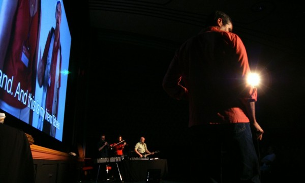

-
Social Poetry: Sam Green at The Kitchen
by Stephen Squibb October 13, 2010
Given the many victories won by progressive movements in the modern era, it is worth asking after the pervasive narrative of failure that surrounds their legacy. Even exempting the entirely predictable, institutional reaction personified by certain pink-faced half-wits, many people remain locked in a deep and abiding pessimism. By what standard can a tradition so accomplished be found so wanting?
The answer is provided by Sam Green in the title of his engaging live documentary Utopia in Four Movements, which played the Kitchen last week. Green, who admits to approaching the term ‘utopia’ with equal parts affection and cynicism, has created a striking mediation on four examples of what he takes to be the utopian impulse. The extent to which each of these is, strictly speaking, utopian is debatable; a fact acknowledged by the filmmaker when he admits that, for him, utopia is as much about hope and imagination as creating heaven on earth. The admission is indicative, but what might have been a fatal confusion becomes – in the dexterous hands of Green and his collaborators, musicians Dave Cerf and the Brooklyn-based Quavers, an animating, even appropriate, tension.
Indeed, the most consistently satisfying aspect of Utopia is the contrast between the novelty of its form and the consternation of its content. Mixed from live voice over, film and images (Green), recorded sound (Cerf) and live music (the Quavers), the format combines the nerdy pleasures of documentary with the emotional heft of live performance. Thus while Green is detailing the grim fate of this or that ideal, experiment or movement, we are being serenaded with the building uplift of the Quaver’s prog-rock. This friction could probably be pushed even further, as the more the different elements pull in conflicting directions, the more complicated, and interesting, the presentation becomes.
After an introduction, we begin with Esperanto, the fully synthetic language created by one polish Doctor Zamenhof in 1887. Zamenhof believed that linguistic pluralism was a primary cause of the inter-ethnic enmity he experienced during his childhood:
The place where I was born and spent my childhood gave direction to all my future struggles. In Bialystok the inhabitants were divided into four distinct elements: Russians, Poles, Germans and Jews; each of these spoke their own language and looked on all the others as enemies. In such a town a sensitive nature feels more acutely than elsewhere the misery caused by language division and sees at every step that the diversity of languages is the first, or at least the most influential, basis for the separation of the human family into groups of enemies.
Green deftly sketches the history of the movement, wisely spending most of his time on footage of contemporary Esperanto speakers gathered at annual conferences. Interspersed with some of the more outlandish episodes in the language’s history- the all-Esperanto William Shatner film is a highlight – Green finds a strikingly cosmopolitan community whose common faith goes some distance in justifying the idealism of its founder. While Green’s voiceover emphasizes a personal wariness towards the idea of a universal language, his camera seems less concerned, even celebratory. The segment climaxes with a beautiful, on-camera performance of a song, in Esperanto, detailing the daily tragedies of life around the world. The images pretty much speak for themselves, but Green’s voiceover intrudes, narrating his implicit inner conflict as he confesses that he simply couldn’t get the tune out of his mind. It’s becomes a routine conceit: the filmmaker doing our hedging for us, and its alternately endearing and frustrating as the performance wears on.
‘The Revolution,’ comes next, and, after a brief treatment of twentieth century socialism – which does note, however cursorily, the distinction between utopian and scientific socialism so central to that tradition – we arrive in present-day Cuba, where a member of the Black Liberation Army has been living in exile for twenty years. This activist, set against advertising-free – if propaganda-laden – Cuban landscape provides further opportunity for Green’s brand of heavily qualified appreciation. And it was here, more than at any other point, that Utopia felt most explicitly designed for an American audience rather than a New York one. Positively elegiac, Green wonders if something won’t be lost when capitalism inevitably triumphs in Cuba, filling up all that public space with garish ads for KFC. As ever, the cinematography is superb, and simply seeing Cubans going about their daily lives feels more subversive than it probably should.
The third and strongest section deals with the construction, in China, of the world’s largest shopping mall. Unearthing the socialist background of an early shopping center pioneer, Victor Gruen, Green gives us a fascinating portrait of the slow death of an ideal. One by one, the day-care centers and community gardens are shorn from Gruen’s plans by developers, until, late in life, he is finally forced to denounce his creation as a totally degraded form of his initial intention. In China meanwhile, the billionaire behind the latest, largest mall has chosen a location that’s entirely too remote, on the hope of drawing patrons post-construction. When these customers fail to materialize, the Party maintains operation of the mall’s many amenities by subsidy, so as to avoid losing face. The resulting landscape, all vacant stores and empty rollercoasters, is sort of a documentarian’s wet dream, and Green takes full advantage. Gently constellating this colossal fuckup with interviews of various employees and shots of mascots gamely performing to evacuated parking lots, Green finds a bittersweet humor as the contradictions bubble to the surface. This vast, hollow temple of consumption – built by a billionaire but maintained by the state – captures beautifully China’s conflicting utopian legacies, equal parts communist and capitalist. It is also the only moment where Green seems willing to consider that utopianism might not be an exclusively leftist disease, but more on this later.
The last movement, entitled ‘Elegy for the 20th Century,’ focuses on the work of forensic anthropologists trying to identify bodies in mass graves. Intended as a sort of counterintuitive moment of optimism, it seems instead to double down on some of the earlier interpretive questions surrounding this term ‘utopia.’ I mean, if wanting to know where your murdered child is buried is utopian, then things are even worse than we thought.
And that, ultimately, is the best and the worst thing about these Four Movements: the decidedly pregnant misunderstanding at their center. So let’s be clear: very little of what Green considers to be ‘utopian,’ actually is, and often it’s not even close. Utopia, as we’re reminded early in the show, is a no-place, an impossibility, and to call something ‘utopian, like calling it ‘ideological’ is typically derogatory and reserved the position of one’s opponents. There is a difference, in other words, between saying that everyone should have enough to eat, and that everyone should be able to eat whatever they want, whenever they want, and also never be unhappy or in pain, plus pets and cake. The former is a possibility that has existed for decades, the latter is utopian. And watching Green, a very smart and charismatic figure, routinely describe the ambitious, the unlikely, or even, most surprisingly, simply the good or the correct, as ‘utopian’ is finally quite disturbing. This effect is magnified when the virulent market utopianism of the ongoing neo-liberal nightmare is mentioned only in passing; the impact of the American embargo against Cuba is downplayed; and Marx – he of the international campaign for the eight-hour workday – is said to have believed himself in possession of some magic utopian formula. The point is not that Green is a right-wing ideologue; on the contrary. What is fascinating is that this investigation of utopia, elegant and commendable in every aesthetic respect, has so completely internalized a reactionary semantic framework – to the point of ignoring utopianism where it exists and finding its where it doesn’t.
But Green is not writing an essay, he’s doing performance and by dwelling on the surface of the work we risk missing the deeper questions it would ask. It would be one thing, that is, if this fraught sort of relationship with the past was an isolated phenomenon, but it isn’t, far from it, in fact. Thus what Green is performing so clearly, (and let’s leave out the murderously dull and tragically prevalent fixation on intention here; they’re all primary sources at the end of the day), is his generation’s characteristic substitution of fascination for commitment. Rather than picking a side we seem endlessly content to study, with a level of detail bordering on the obsessive, those ideals and positions that we ought, by cultural and historical rights, to be openly partisan for.
This trend was equally evident in Green’s previous film, The Weather Underground, also excellent, which consumed itself with documenting the fallout from radical commitment. Here was Todd Gitlin, still mad at Weather for breaking up SDS. Here was Mark Rudd, full of remorse and confusion. Here was Bernie Dohrn and Billy Ayers, grim faced and stoic. And then, in the middle, in a series of blink-and-you-missed-it cameos, was an FBI agent assigned to their case, cheerfully admitting to harassment, intimidation and torture, “I know some people of the liberal persuasion might have a problem with it,” he laughs, “but hey, if you’ve done nothing wrong you have nothing to worry about.” A moment later and we’re back with Rudd looking wistfully out to sea, or with Brian Flanagan walking down 11th street or whatever. The fact that the Bureau broke so many laws in pursuing Weather that they couldn’t even be prosecuted is mentioned, but not dwelt upon because- and here’s the key- the debased ruthlessness of the alternative isn’t as mesmerizing as those whose mistakes we must never risk making.
Now, this is one thing when dealing with the categorically ridiculous Weatherman (The lyric is: “You don’t need a weatherman to know which way the wind blows.” That’s don’t. As in: Do Not Need. Forty years later, the stupidity remains breathtaking.) and another when offering a survey, however incomplete, of the progressive impulse writ large. This is why, though Weather is the formally superior work, Utopia is much more significant, because Green’s voiceover foregrounds this neurotic cycle of critical fascination and distancing. Listening to him explain these four movements, we are placed, productively, I think, in the role of socio-cultural analyst as the misapplication of ‘utopia’ proves more revealing than strict accuracy. Thus Green’s argument – that we are still being bound up in the horizon of the twentieth century – itself displays the traumatized language and thinking that are the deeper symptoms of his diagnoses.
What makes Four Movements so fascinating is precisely the space between the voiceover and the other performative elements. After all, as Paul Ricoeur wrote, “What is at stake in ideology and utopia is power. It is here that ideology and utopia intersect. If ideology is the surplus-value added to the lack of belief in authority, utopia is what unmasks this surplus-value.” If, in this respect, we can take Green’s narration as playing at ideology by relentlessly returning us to the status-quo, perhaps we can also take his images, Cerf’s sound, and the Quaver’s music as so many utopian actors, each pulling at his paving stones to reveal the beach beneath.